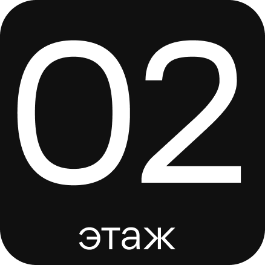

Ужин в небе
Второй этаж здания занимает ресторан,
где можно насладиться разнообразием вкуснейших блюд. Посредине зала расположена барная стойка.
Атмосферу заведения дополняет зона
с панорамным видом, что позволяет насладиться живописными пейзажами во время обеда или ужина.


